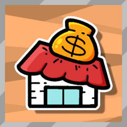
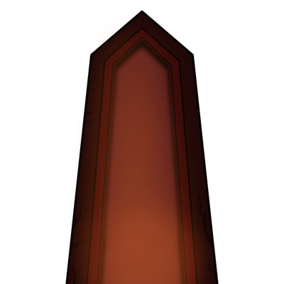

Các node tiêu Ember Stone: SHOP (bán tháp/khối/buff/rune/relic theo storeCost, 1 món giảm 50 %, reroll 20 gem +20 mỗi lần, hồi máu 15 gem 1 lần; xuất hiện từ bước >5, cooldown 2 bước), WORKSHOP (Reforge đổi hình khối, Dismantle bỏ thẻ khi ≥6, Engrave khắc rune
Mô tả
Các node tiêu Ember Stone: SHOP (bán tháp/khối/buff/rune/relic theo storeCost, 1 món giảm 50 %, reroll 20 gem +20 mỗi lần, hồi máu 15 gem 1 lần; xuất hiện từ bước >5, cooldown 2 bước), WORKSHOP (Reforge đổi hình khối, Dismantle bỏ thẻ khi ≥6, Engrave khắc rune 20 gem; bước >3, cooldown 3), CAMPSITE (Supply Station: gem hồi 1/3/10 HP, +5 max HP, +1 dmg lửa, +3 armor; Circus: vòng quay; Altar trial), ALTAR (cũ: Recover 3 HP / Sacrifice / Purify full / Enhance +5 max HP; V2: ký pact hệ — chỉ dùng tháp 1 hệ ở trận sau → relic hệ 4101–4105), MINI_SHOP/MINI_WORKSHOP (thưởng node trước boss, 2 hành động).
Shop: ShopMapNodeData.TurnToShopMapNodeData(node) lưu list_ShopContent/list_IsCardBought/list_IsDiscount/rerollCost/isHealSold (giữ khi quay lại). GenerateShopContent: 3 tháp ngẫu nhiên (GetRandomTowerSettingData, tránh đã có, ưu tiên 2x2), 3 khối (Tiny ≤3 ô), buff/rune/relic (GetRandomRelicSettingDataForStore, GetRandomRuneSettingDataForStore, GetRandomBuffSettingDataForStore); discount: một số món ×0.5 (talent Shop Discount 1/2/3 món). Mua: gem ≥ GetCostIncludingDiscount → RequestAddGem(−cost), thẻ vào storage/loadout; heal 15 gem (Medical Station). Reroll: rerollCost 20, +20/lần (VIP Customer: lần đầu free), cooldown 0.66 s. Workshop: chọn thẻ khối → Reforge (GetPanelSettingDataForWorkshopModify cùng số ô), Dismantle (≥6 thẻ), Engrave 20 gem (GetRandomRuneSettingDataForStore theo blockCount; Steaming Workshop +2 lựa chọn). Campsite: Supply Station (giá ×1.35 Shard HP L1), Circus (WheelMenuController — vòng quay), Altar trial. Altar V2: chọn hệ → AltarPactData(altarEffectType, perkEffect 7061–7065, rewardType relic) → GameplayData.list_AltarPactData; trận sau ResourceManager.SetTowerDamageTypeLimit; hoàn thành → relic (Flame Demon's Crown/Spear of Thunder God/Frost Giant's Eyeball/Giant Toad Essence/Archmage's Staff), achievement ALTAR_ALL_PACT_CLEAR.
Hình minh hoạ

Shop: reroll 20+20, discount 50 %, heal 15

Altar: pact hệ → relicVàngGold
Lưu ý
📌 Chưa xác định: Số món mỗi loại trong shop (3 tháp + 3 khối + ?) đọc một phần từ GenerateShopContent
📌 Chưa xác định: Giá từng item Supply Station (EmberRecoverItemData) trong prefab
Altar pact: Chọn hệ (FIRE/ICE/ELECTRIC/POISON/ARCANE) → ALTAR_CONFIRM → RequestStartAltarPact(AltarPactData) → perk ALTAR_LIMIT_x hoạt động ở battle kế (ALTAR_MISSION_DURATION 'In the next battle') → Thắng → relic thưởng; ALTAR_PACT_SUCCESS; thất bại → OnAltarPactChanged (Quy tắc: Mỗi hệ 1 lần/run (ALTAR_PACT_ALREADY_COMPLETED); Altar cũ: Recover 3 HP / Purify full / Enhance +5 max HP / Sacrifice)
Luồng chi tiết theo code
Shop: ShopMapNodeData.TurnToShopMapNodeData(node) lưu list_ShopContent/list_IsCardBought/list_IsDiscount/rerollCost/isHealSold (giữ khi quay lại). GenerateShopContent: 3 tháp ngẫu nhiên (GetRandomTowerSettingData, tránh đã có, ưu tiên 2x2), 3 khối (Tiny ≤3 ô), buff/rune/relic (GetRandomRelicSettingDataForStore, GetRandomRuneSettingDataForStore, GetRandomBuffSettingDataForStore); discount: một số món ×0.5 (talent Shop Discount 1/2/3 món). Mua: gem ≥ GetCostIncludingDiscount → RequestAddGem(−cost), thẻ vào storage/loadout; heal 15 gem (Medical Station). Reroll: rerollCost 20, +20/lần (VIP Customer: lần đầu free), cooldown 0.66 s. Workshop: chọn thẻ khối → Reforge (GetPanelSettingDataForWorkshopModify cùng số ô), Dismantle (≥6 thẻ), Engrave 20 gem (GetRandomRuneSettingDataForStore theo blockCount; Steaming Workshop +2 lựa chọn). Campsite: Supply Station (giá ×1.35 Shard HP L1), Circus (WheelMenuController — vòng quay), Altar trial. Altar V2: chọn hệ → AltarPactData(altarEffectType, perkEffect 7061–7065, rewardType relic) → GameplayData.list_AltarPactData; trận sau ResourceManager.SetTowerDamageTypeLimit; hoàn thành → relic (Flame Demon's Crown/Spear of Thunder God/Frost Giant's Eyeball/Giant Toad Essence/Archmage's Staff), achievement ALTAR_ALL_PACT_CLEAR.